library(tidyverse) # data wrangling
library(knitr) # nice tables
library(lme4) # fit mixed models
library(lmerTest) # mixed models
library(broom.mixed) # tidy output of mixed models
library(afex) # fit mixed models for lrt test
library(emmeans) # marginal means
library(ggeffects) # marginal means
library(ggrain) # rain plots
library(easystats) # nice ecosystem of packages
options(scipen=999) # get rid of sci notationMultilevel Modeling (with R) Part 2
(adapted from materials by Jason Geller)
Suyog Chandramouli
2026-03-30
Multilevel models
When to use them:
Nested designs
Repeated measures
Longitudinal data
Complex designs
Why use them:
- Captures variance occurring between groups and within groups
What they are:
- Linear model with extra residuals
Today
Everything you need to know to run and report a MLM
- ICC and the null model
- Organizing data and centering
- Estimation
- Model building and crossed random effects
- Fit and interpret multilevel models
- Visualization and partial pooling
- Effect size
- Reporting
- Power and sample size
- Bridge to Bayesian
Packages
- Find the .qmd document here to follow along: https://github.com/suyoghc/PSY504-Spring-2026/blob/main/posts/Multilevel%20Models/mlm_part2_students.qmd
Today’s data
What did you say?
- Ps (N = 31) listened to both clear (NS) and 6 channel vocoded speech (V6)
- (https://www.mrc-cbu.cam.ac.uk/personal/matt.davis/vocode/a1_6.wav)
- Fixed factor: ?
- Random factor: ?
- What would change if we replicated this study?
- What would stay the same?
- (https://www.mrc-cbu.cam.ac.uk/personal/matt.davis/vocode/a1_6.wav)
- Ps (N = 31) listened to both clear (NS) and 6 channel vocoded speech (V6)
Today’s data
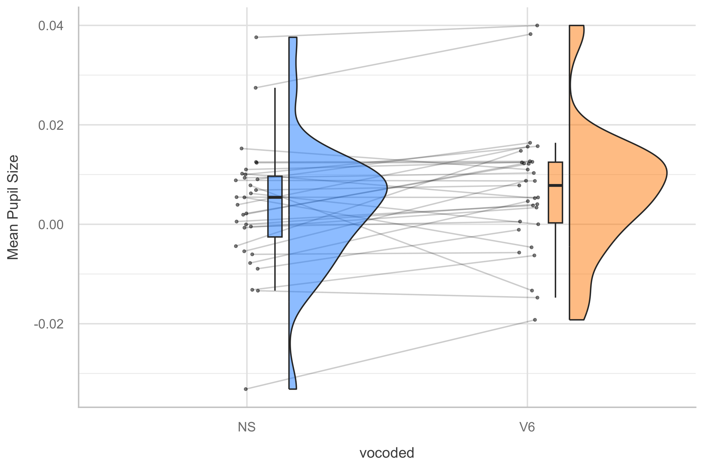
Data organization
Data Structure
- MLM analysis (in R) requires data in long format
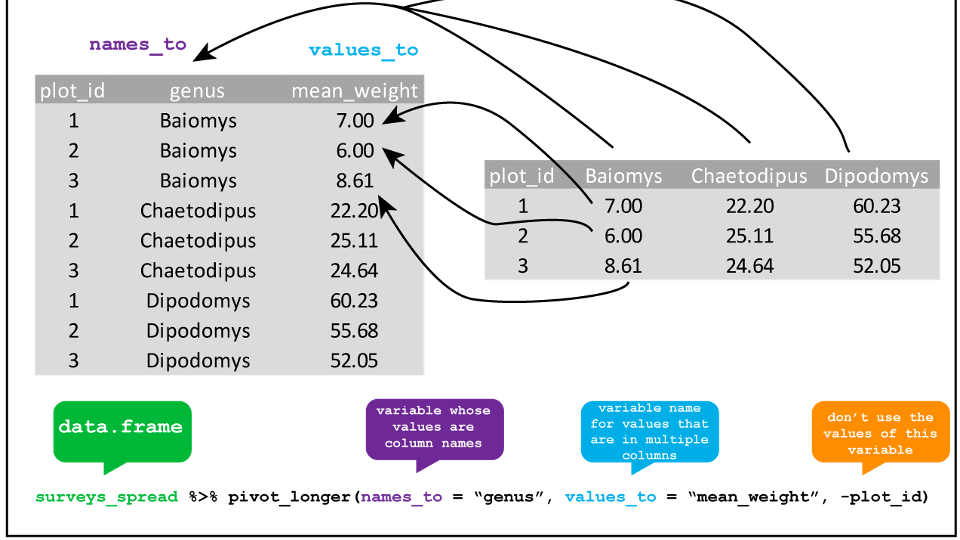
Data organization
Level 1: trial
Level 2: subject
| subject | trial | vocoded | mean_pupil |
|---|---|---|---|
| EYE15 | 3 | V6 | 0.0839555 |
| EYE15 | 4 | V6 | 0.0141083 |
| EYE15 | 5 | V6 | 0.0224967 |
| EYE15 | 6 | V6 | 0.0007424 |
| EYE15 | 7 | V6 | 0.0242540 |
| EYE15 | 8 | V6 | 0.0267617 |
The Null Model & ICC
Null model (unconditional means)
Remember the ICC from the simulation app? Here’s how to compute it from real data.
- ICC is a standardized way of expressing how much variance is due to clustering/group
- Ranges from 0-1
- Can also be interpreted as correlation among observations within cluster/group!
- If ICC is sufficiently low (i.e., \(\rho\) < .1), then you don’t have to use MLM! BUT YOU PROBABLY SHOULD
Null model (unconditional means)
- What does this formula say?
Linear mixed model fit by REML. t-tests use Satterthwaite's method [
lmerModLmerTest]
Formula: mean_pupil ~ (1 | subject)
Data: eye
REML criterion at convergence: -19811.6
Scaled residuals:
Min 1Q Median 3Q Max
-5.1411 -0.5530 -0.0463 0.4822 10.8130
Random effects:
Groups Name Variance Std.Dev.
subject (Intercept) 0.0001303 0.01142
Residual 0.0016840 0.04104
Number of obs: 5609, groups: subject, 31
Fixed effects:
Estimate Std. Error df t value Pr(>|t|)
(Intercept) 0.005227 0.002124 29.457806 2.461 0.0199 *
---
Signif. codes: 0 '***' 0.001 '**' 0.01 '*' 0.05 '.' 0.1 ' ' 1Calculating ICC
Run baseline (null) model
Get intercept variance and residual variance
\[\mathrm{ICC}=\frac{\text { between-group variability }}{\text { between-group variability+within-group variability}}\]
\[ ICC=\frac{\operatorname{Var}\left(u_{0 j}\right)}{\operatorname{Var}\left(u_{0 j}\right)+\operatorname{Var}\left(e_{i j}\right)}=\frac{\tau_{00}}{\tau_{00}+\sigma^{2}} \]
Quick reminder
Fixed effects = model for the means
- “What is the average effect of vocoding on pupil size?”
- Centering changes what this coefficient estimates
Random effects = model for the variance
- “How much do subjects differ in their baseline? In their response?”
- Centering doesn’t affect this
Centering
In a single-level regression, centering ensures that the zero value for each predictor is meaningful before running the model
In MLM, if you have specific questions about within, between, and contextual effects, you need to center!
But which mean?
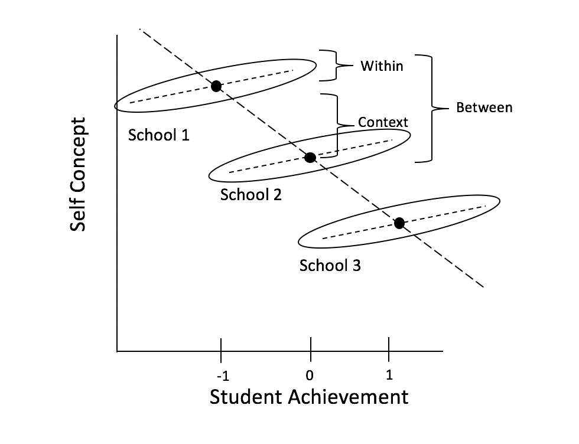
Group- vs. Grand-Mean Centering
Grand-mean centering: \(x_{ij} - x\)
- Variable represents each observation’s deviation from everyone’s norm, regardless of group
Group-mean centering: \(x_{ij} - x_j\)
- Variable represents each observation’s deviation from their group’s norm (removes group effect)
Group- vs. Grand-Mean Centering
Level 1 predictors
Grand-mean centering
- Include means of level 2
- Allows us to directly test within-group effect
- Coefficient associated with the Level 2 group mean represents contextual effect
- Include means of level 2
Group-mean centering
- Level 1 coefficient will always be with within-group effect, regardless of whether the group means are included at Level 2 or not
- If level 2 means included, coefficient represents the between-groups effect
Note
Can apply to categorical predictors as well (see Yaremych, Preacher, & Hedeker, 2023)
Centering in R
# how to group mean center
d <- d %>%
# Grand mean centering (CMC)
mutate(iv.gmc = iv-mean(iv)) %>%
# group mean centering (more generally, centering within cluster)
group_by(id) %>%
mutate(iv.cm = mean(iv),
iv.cwc = iv-iv.cm)
library(datawizard) #easystats
#data wizard way
x <- demean(x, select=c("x"), group="ID") #gets within-group and included cluster meansModel Estimation
Why not OLS?
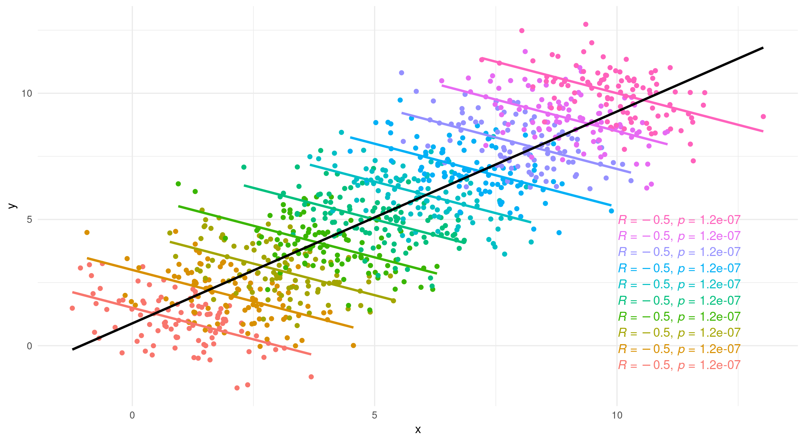
- Remember: ignoring group structure can reverse your conclusions
- OLS has no way to account for groups — one error term for everything
- MLE with random effects is the fix
Maximum Likelihood
In MLM we try to maximize the likelihood of the data — no OLS!
We’ll revisit likelihood in depth when we cover Bayesian inference — it’s half of Bayes’ theorem
Likelihood
You’ve seen this in logistic regression and the Bayesian lecture: “Given our data, which parameter values are most plausible?”
MLM uses the same principle — but now searching over fixed effects AND variance components
Interactive: https://rpsychologist.com/likelihood/
Log-Likelihood and Deviance
You know log-likelihood from logistic regression:
- Sum of log(scores) across observations — higher = better fit
New: Deviance = \(-2 \times \log L\)
- Converts log-likelihood into a scale where we can compare models
- Difference in deviance between two models \(\approx \chi^2\) — gives us a p-value
- Known as the likelihood ratio test (LRT)
Comparing nested models
Suppose there are two models:
- Reduced model includes predictors \(x_1, \ldots, x_q\)
- Full model includes predictors \(x_1, \ldots, x_q, x_{q+1}, \ldots, x_p\)
We want to test the hypotheses:
\(H_0\): smaller model is better
\(H_1\): Larger model is better
To do so, we will use the drop-in-deviance test (also known as the nested likelihood ratio test)
Drop-In-Deviance Test
Hypotheses:
\(H_0\): smaller model is better
\(H_1\): Larger model is better
Test Statistic: \[G = (-2 \log L_{reduced}) - (-2 \log L_{full})\]
P-value: \(P(\chi^2 > G)\):
- Calculated using a \(\chi^2\) distribution
- df = \(df_1\) - \(df_2\)
Testing deviance
We can use the
anovafunction to conduct this test- Add test = “Chisq” to conduct the drop-in-deviance test
I like
test_likelihoodratiofromeasystats
Model fitting: ML or REML?
Two flavors of maximum likelihood
Maximum Likelihood (ML or FIML)
Jointly estimate the fixed effects and variance components using all the sample data
Can be used to draw conclusions about fixed and random effects
Issue:
- Results are biased because fixed effects are estimated without error
Model fitting: ML or REML
Restricted Maximum Likelihood (REML)
Estimates the variance components using the sample residuals not the sample data
It is conditional on the fixed effects, so it accounts for uncertainty in fixed effects estimates
- This results in unbiased estimates of variance components
- Associated with error/penalty
Model fitting: ML or REML?
Research has not determined one method absolutely superior to the other
REML (
REML = TRUE; default inlmer) is preferable when:The number of parameters is large
Primary objective is to obtain relaible estimates of the variance parameters
For REML, likelihood ratio tests can only be used to draw conclusions about variance components
ML (
REML = FALSE) must be used if you want to compare nested fixed effects models using a likelihood ratio test (e.g., a drop-in-deviance test)
ML or REML?
- What would we use if we wanted to compare the below models?
ML or REML?
- What would we use if we wanted to compare the below models?
Fitting and Interpreting Models
Modeling approach
- Forward/backward approach
Keep it maximal1Whatever can vary, should vary
- Decreases Type 1 error
The other side of the debate
Matuschek et al. (2017)1: Maximal models can substantially reduce power
- In simulations, parsimonious models (retaining only variance components supported by data) achieved better power with acceptable Type I error
Field (Ch 19) advocates a bottom-up approach: start simple, add complexity
Both approaches are defensible — the key is being principled and transparent
Practical guidance
“Keep it maximal” = safest default for Type I error control
If convergence fails: principled simplification is good practice, not a failure
Singmann & Kellen (2019): Start maximal. If it doesn’t converge, reduce transparently. Report what you did and why.
The key: report your decisions (which terms removed, why, in what order)
Modeling approach: convergence
Full (maximal) model
- Only when there is convergence issues should you remove terms
- if non-convergence (pay attention to warning messages in summary output!):
- Try different optimizer (
afex::all_fit())- Sort out random effects
- Remove correlations between slopes and intercepts
- Random slopes
- Random Intercepts
- Sort out fixed effects (e.g., interaction)
- Once you arrive at the final model present it using REML estimation
- Sort out random effects
- Try different optimizer (
- if non-convergence (pay attention to warning messages in summary output!):
- Only when there is convergence issues should you remove terms
Modeling approach
If your model is singular (check output!!!!)
- Variance might be close to 0
- Perfect correlations (1 or -1)
Drop the parameter!
Modeling approach
Linear mixed model fit by REML. t-tests use Satterthwaite's method [
lmerModLmerTest]
Formula: math ~ ses + (1 + ses | schcode)
Data: data
REML criterion at convergence: 48190.1
Scaled residuals:
Min 1Q Median 3Q Max
-3.8578 -0.5553 0.1290 0.6437 5.7098
Random effects:
Groups Name Variance Std.Dev. Corr
schcode (Intercept) 3.2042 1.7900
ses 0.7794 0.8828 -1.00
Residual 62.5855 7.9111
Number of obs: 6871, groups: schcode, 419
Fixed effects:
Estimate Std. Error df t value Pr(>|t|)
(Intercept) 57.6959 0.1315 378.6378 438.78 <0.0000000000000002 ***
ses 3.9602 0.1408 1450.7730 28.12 <0.0000000000000002 ***
---
Signif. codes: 0 '***' 0.001 '**' 0.01 '*' 0.05 '.' 0.1 ' ' 1
Correlation of Fixed Effects:
(Intr)
ses -0.284
optimizer (nloptwrap) convergence code: 0 (OK)
boundary (singular) fit: see help('isSingular')Crossed Random Effects
Crossed random effects
In Part 1 we saw crossed designs — here’s how to fit them
Nested: \(y_{ij} = \beta_0 + \beta_1 x_{ij} + U_{0j} + e_{ij}\)
Crossed: \(y_{ijk} = \beta_0 + \beta_1 x_{ijk} + U_{0j} + W_{0k} + e_{ijk}\)
- Just one extra random intercept term — \(W_{0k}\) for items alongside \(U_{0j}\) for subjects
- \(U_{0j}\) and \(W_{0k}\) are assumed independent (any subject × item interaction → residual)
- Replaces the old “F1 and F2” separate-analyses approach (Clark, 1973)
When to use crossed random effects
Whenever you sample both participants AND stimuli (words, images, scenarios, etc.)
- Psycholinguistics, cognitive psych, social psych with vignettes
- Most experimental paradigms with stimulus sets
Note: crossed random effects increase model complexity
- Convergence issues are more likely here
- This is often where the maximal-vs-parsimonious debate becomes practical
Maximal model: Fixed effect random intercepts (subject) and slopes (vocoded) model
Linear mixed model fit by REML. t-tests use Satterthwaite's method [
lmerModLmerTest]
Formula: mean_pupil ~ vocoded + (1 + vocoded | subject)
Data: eye
REML criterion at convergence: -19813.7
Scaled residuals:
Min 1Q Median 3Q Max
-5.0296 -0.5509 -0.0467 0.4810 10.7164
Random effects:
Groups Name Variance Std.Dev. Corr
subject (Intercept) 0.00013592 0.011658
vocodedV6 0.00002816 0.005307 -0.19
Residual 0.00167497 0.040926
Number of obs: 5609, groups: subject, 31
Fixed effects:
Estimate Std. Error df t value Pr(>|t|)
(Intercept) 0.003643 0.002235 28.852287 1.63 0.1140
vocodedV6 0.003124 0.001453 30.471987 2.15 0.0396 *
---
Signif. codes: 0 '***' 0.001 '**' 0.01 '*' 0.05 '.' 0.1 ' ' 1
Correlation of Fixed Effects:
(Intr)
vocodedV6 -0.306Fixed effects
- Interpretation same as lm
Linear mixed model fit by REML. t-tests use Satterthwaite's method [
lmerModLmerTest]
Formula: mean_pupil ~ vocoded + (1 + vocoded | subject)
Data: eye
REML criterion at convergence: -19813.7
Scaled residuals:
Min 1Q Median 3Q Max
-5.0296 -0.5509 -0.0467 0.4810 10.7164
Random effects:
Groups Name Variance Std.Dev. Corr
subject (Intercept) 0.00013592 0.011658
vocodedV6 0.00002816 0.005307 -0.19
Residual 0.00167497 0.040926
Number of obs: 5609, groups: subject, 31
Fixed effects:
Estimate Std. Error df t value Pr(>|t|)
(Intercept) 0.003643 0.002235 28.852287 1.63 0.1140
vocodedV6 0.003124 0.001453 30.471987 2.15 0.0396 *
---
Signif. codes: 0 '***' 0.001 '**' 0.01 '*' 0.05 '.' 0.1 ' ' 1
Correlation of Fixed Effects:
(Intr)
vocodedV6 -0.306Degrees of freedom and p-values
Degrees of freedom (denominator) and p-values can be assessed with several methods:
Satterthwaite (default when install
lmerTestand then runlmer)Asymptotic (Inf) (default behavior lme4)
Kenward-Roger — recommended for small samples (more conservative; Singmann & Kellen, 2019)
Random effects/variance components
Tells us how much variability there is around the fixed intercept/slope
- How much does the average pupil size change between participants
Linear mixed model fit by REML. t-tests use Satterthwaite's method [
lmerModLmerTest]
Formula: mean_pupil ~ vocoded + (1 + vocoded | subject)
Data: eye
REML criterion at convergence: -19813.7
Scaled residuals:
Min 1Q Median 3Q Max
-5.0296 -0.5509 -0.0467 0.4810 10.7164
Random effects:
Groups Name Variance Std.Dev. Corr
subject (Intercept) 0.00013592 0.011658
vocodedV6 0.00002816 0.005307 -0.19
Residual 0.00167497 0.040926
Number of obs: 5609, groups: subject, 31
Fixed effects:
Estimate Std. Error df t value Pr(>|t|)
(Intercept) 0.003643 0.002235 28.852287 1.63 0.1140
vocodedV6 0.003124 0.001453 30.471987 2.15 0.0396 *
---
Signif. codes: 0 '***' 0.001 '**' 0.01 '*' 0.05 '.' 0.1 ' ' 1
Correlation of Fixed Effects:
(Intr)
vocodedV6 -0.306Random effects/variance components
Correlation between random intercepts and slopes
Negative correlation
- Higher intercept (for normal speech) less of effect (lower slope)
Parameter1 | Parameter2 | r | 95% CI | t(29) | p
----------------------------------------------------------------
vocodedV6 | (Intercept) | -0.10 | [-0.44, 0.26] | -0.57 | 0.576
Observations: 31Visualize Random Effects
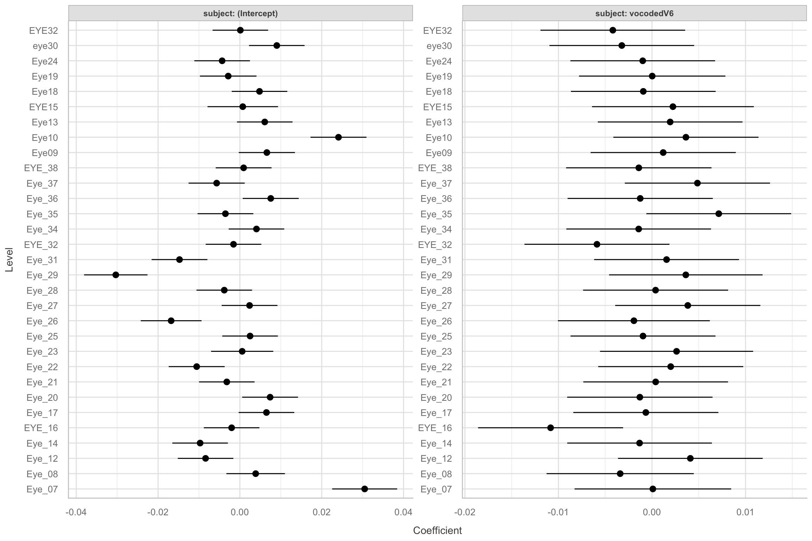
What are you actually seeing?
These aren’t raw subject means — they’ve been pulled toward the grand mean
Subjects with more extreme values → pulled more
Subjects with fewer observations → pulled more
This is called shrinkage or partial pooling
McElreath (2020): Models without this suffer “statistical amnesia” — they can’t learn that what happened in one group is informative about other groups
Why does this happen?
The assumption \(U_{0j} \sim N(0, \sigma_{U_0})\) says: “subject effects are drawn from a common distribution”
This IS the mechanism — it regularizes extreme estimates toward the population mean
- More data for a subject → estimate stays closer to raw mean
- Less data → estimate pulled more toward grand mean
We’ll see this much more clearly in the Bayesian framework — where it becomes a visible prior
Model comparisons
Can compare models using
anovafunction ortest_likelihoodratiofromeasystats- Will be refit using ML if interested in fixed effects
AIC/BIC
- LRT requires nested models
AIC
- AIC:
\[ D + 2p \]
where d = deviance and p = # of parameters in model
Can compare AICs1:
\[ \Delta_i = AIC_{i} - AIC_{min} \]
Less than 2: More parsimonious model is preferred
Between 4 and 7: some evidence for lower AIC model
Greater than 10,: strong evidence for lower AIC
BIC
- BIC:
\[ D + ln(n)*p \]
where d = deviance, p = # of parameters in model, n = sample size
Change in BIC:
\(\Delta{BIC}\) <= 2 (No difference)
\(\Delta{BIC}\) > 3 (evidence for smaller BIC model)
AIC/BIC
Hypothesis testing
Multiple options
- t/F tests with approximate degrees of freedom (Kenward-Rogers or Satterwaithe)
- Parametric bootstrap
- Likelihood ratio test (LRT)
- Can be interpreted as main effects and interactions
- Use
afexpackage to do that
Hypothesis testing - afex
Using emmeans
- Get means and contrasts
| vocoded | emmean | SE | df | asymp.LCL | asymp.UCL |
|---|---|---|---|---|---|
| NS | 0.0036427 | 0.0022348 | Inf | -0.0007374 | 0.0080229 |
| V6 | 0.0067668 | 0.0022618 | Inf | 0.0023337 | 0.0111999 |
| contrast | estimate | SE | df | asymp.LCL | asymp.UCL |
|---|---|---|---|---|---|
| NS - V6 | -0.0031241 | 0.0014532 | Inf | -0.0059723 | -0.0002759 |
Assumptions
Check assumptions
Linearity
Normality
Level 1 residuals are normally distributed around zero
Level 2 residuals are multivariate-normal with a mean of zero
Homoskedacticity
- Level 1/Level 2 predictors and residuals are homoskedastic
Collinearity
Outliers
Assumptions
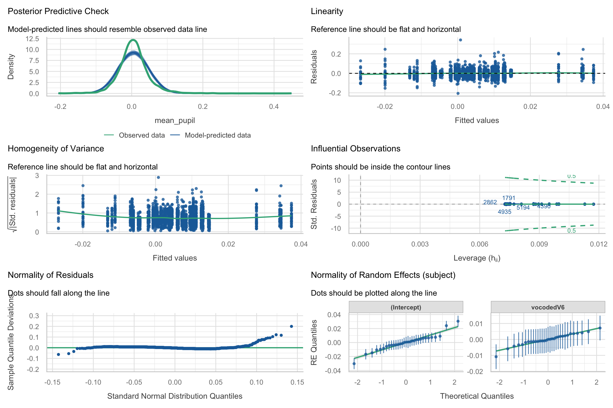
Visualization
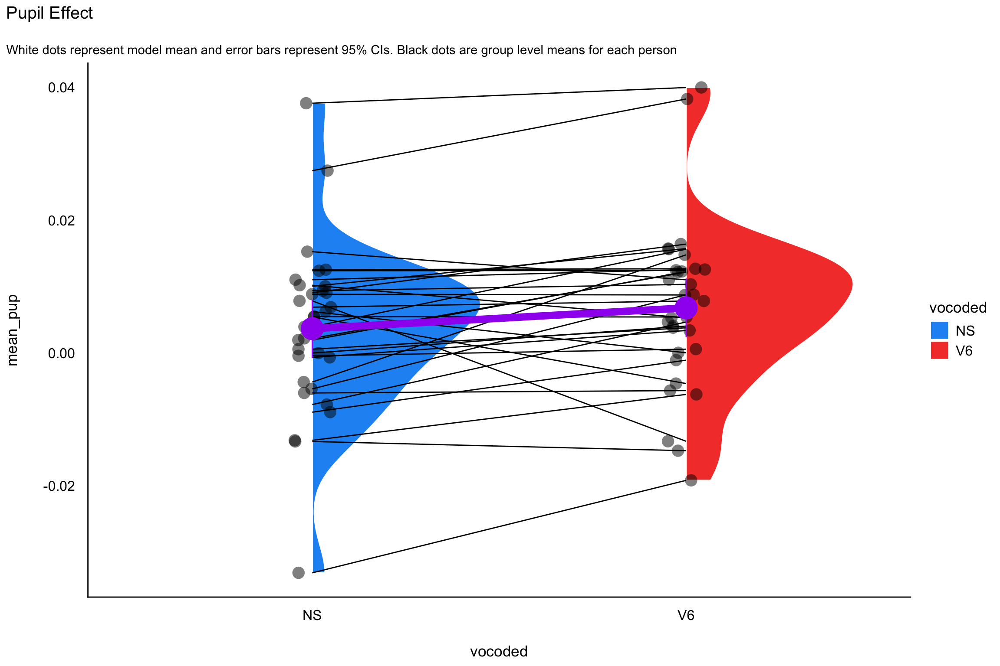
ggeffects
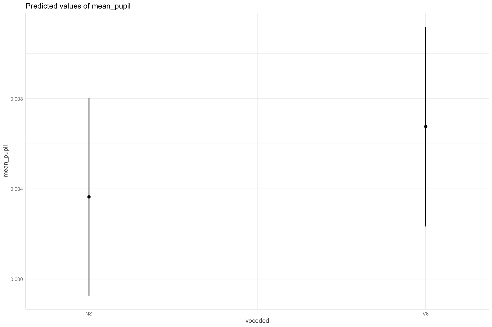
Effect size
- Report pseudo-\(R^2\) for marginal (fixed) and conditional model (full model) (Nakagawa et al. 2017)
\[ R^2_{LMM(c)} = \frac{\sigma_f^2\text{fixed} + \sigma_a^2\text{random}}{\sigma_f^2\text{fixed} + \sigma_a^2\text{random} + \sigma_e^2\text{residual}} \]
\[ R^2_{\text{LMM}(m)} = \frac{\sigma_f^2\text{fixed}}{\sigma_f^2\text{fixed} + \sigma_a^2\text{random} + \sigma_e^2\text{residual}} \]
- Report semi-partial \(R^2\) for each predictor variable
- \(R^2_\beta\)
partR2package in R does this for you
- \(R^2_\beta\)
Effect size
Random effect variances not available. Returned R2 does not account for random effects.# R2 for Mixed Models
Conditional R2: NA
Marginal R2: 0.001Effect size
- Cohen’s \(d\) for treatment effects/categorical predictions1
\[ d = \frac{\text{Effect}}{\sqrt{\sigma^2_\text{Intercept} + \sigma^2_\text{slope} + \sigma^2_\text{residual}}} \]
contrast effect.size SE df asymp.LCL asymp.UCL
NS - V6 -0.0781 0.0377 Inf -0.152 -0.00421
sigma used for effect sizes: 0.04
Degrees-of-freedom method: inherited from asymptotic when re-gridding
Confidence level used: 0.95 Reporting Results
Describing a MLM analysis - Structure
What was the nested data structure (e.g., how many levels; what were the units at each level?)
• How many units were in each level, on average?
• What was the range of the number of lower-level units in each group/cluster?
Describing a MLM analysis - Model
What equation can best represent your model?
What estimation method was used (e.g., ML, REML)?
If there were convergence issues, how was this addressed?
What software (and version) was used (when using R, what packages as well)?
If degrees of freedom were used, what kind?
What type of models were estimated (i.e., unconditional, random intercept, random slope, max)?
What variables were centered and what kind of centering was used?
What model assumptions were checked and what were the results?
Describing a MLM analysis - Results
What was the ICC of the outcome variable?
Are fixed effects and variance components reported?
What inferential statistics were used (e.g., t-statistics, LRTs)?
How precise were the results (report the standard errors and/or confidence intervals)?
Were model comparisons performed (e.g., AIC, BIC, if using an LRT,report the χ2, degrees of freedom, and p value)?
Were effect sizes reported for overall model and individual predictors (e.g., Cohen’s d, \(R^2\) )?
Write-up
We fitted a linear mixed model (estimated using REML and nloptwrap optimizer) to predict mean_pupil with vocoded (formula: mean_pupil ~ vocoded). The model included vocoded as random effects (formula: ~1 + vocoded | subject). The model’s explanatory power related to the fixed effects alone (marginal R2) is 1.45e-03. The model’s intercept, corresponding to vocoded = NS, is at 3.64e-03 (95% CI [-7.38e-04, 8.02e-03], t(5603) = 1.63, p = 0.103). Within this model:
- The effect of vocoded [V6] is statistically significant and positive (beta = 3.12e-03, 95% CI [2.75e-04, 5.97e-03], t(5603) = 2.15, p = 0.032; Std. beta = 0.07, 95% CI [6.49e-03, 0.14])
Standardized parameters were obtained by fitting the model on a standardized version of the dataset. 95% Confidence Intervals (CIs) and p-values were computed using a Wald t-distribution approximation.
Table
| max model | |
|---|---|
| (Intercept) | 0.004 |
| (0.002) | |
| vocodedV6 | 0.003 |
| (0.001) | |
| SD (Intercept subject) | 0.012 |
| SD (vocodedV6 subject) | 0.005 |
| Cor (Intercept~vocodedV6 subject) | −0.195 |
| SD (Observations) | 0.041 |
| Num.Obs. | 5609 |
| R2 Marg. | 0.001 |
| AIC | −19801.7 |
| BIC | −19761.9 |
| RMSE | 0.04 |
Power
Simulation-based power analyses
Simulate new data
Use pilot data (what I would do)
The number one power insight
Number of Level 2 units (clusters/groups) matters MORE than observations per cluster
“500 observations in 8 schools” → poor power for school-level effects
“200 observations across 40 schools” → much better
Rule of thumb: aim for 20-30+ Level 2 units minimum (Kreft, 1996)
Adding more observations within clusters has diminishing returns for between-cluster power
Planning your study
Increase the number of groups/clusters FIRST, then observations per group
Use simulation tools (
faux,simr) to verify power for YOUR specific designPower depends on: number of clusters, cluster size, ICC, effect size, random effects structure
Wrapping Up
What we’ve built
The frequentist MLM toolkit: specify → fit → interpret → test → report
You can handle: nested data, repeated measures, unbalanced designs, crossed random effects
Tools:
lme4+lmerTest+afex+emmeans+easystats
Limitations we encountered
Convergence issues — some models just won’t fit (especially with complex random effects)
Boundary problems — variance estimates stuck at zero (singular fits)
The p-value debates — Satterthwaite vs KR vs LRT, and none are exact
Point estimates only — no full distribution of uncertainty for parameters
Can’t easily make probability statements: “There is a 95% probability that…”
Coming up: Bayesian regression
The models and formula syntax carry over — the inference framework changes
brm(y ~ x + (1|group))instead oflmer(y ~ x + (1|group))Some of these limitations become much easier — or disappear entirely
And the partial pooling / shrinkage we saw today? It becomes beautifully visible.
Appendix
Likelihood visualizations
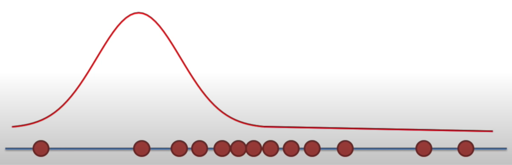
Likelihood visualizations
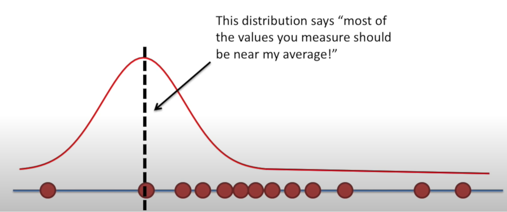
Likelihood visualizations
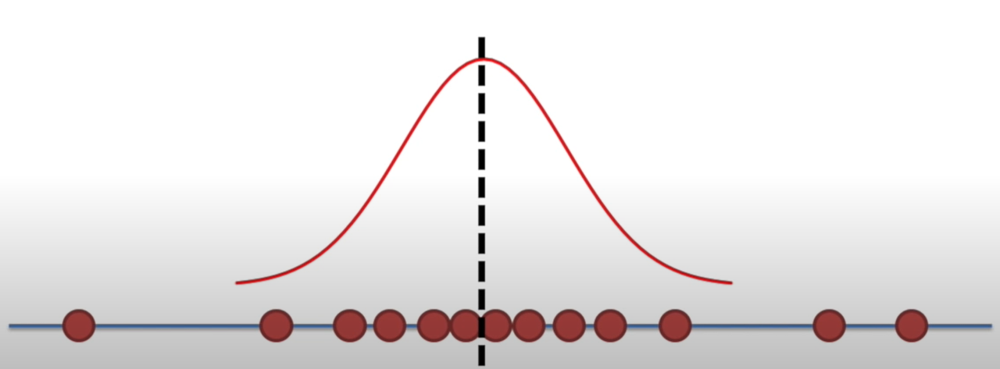
Likelihood visualizations
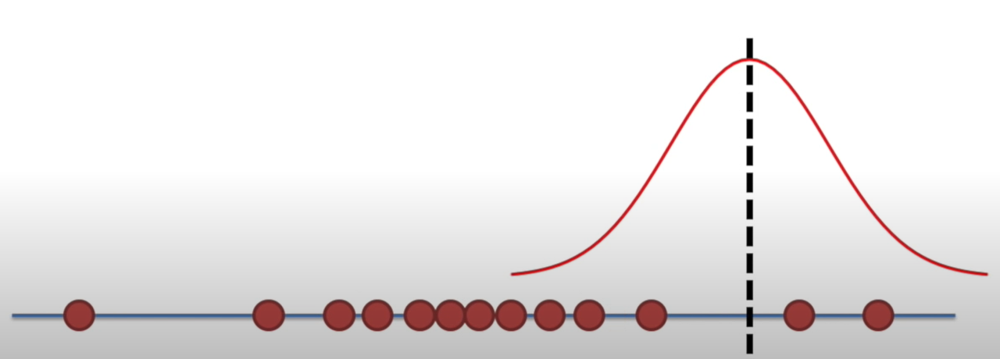
Likelihood visualizations
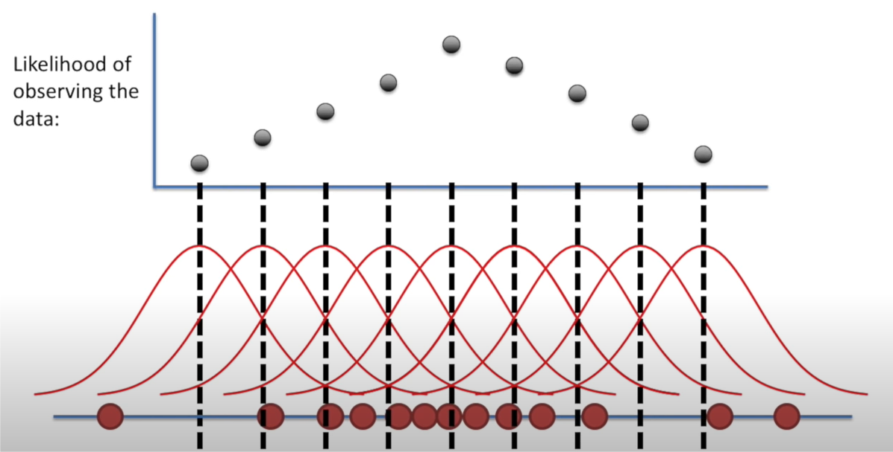
\(\chi^2\) distribution
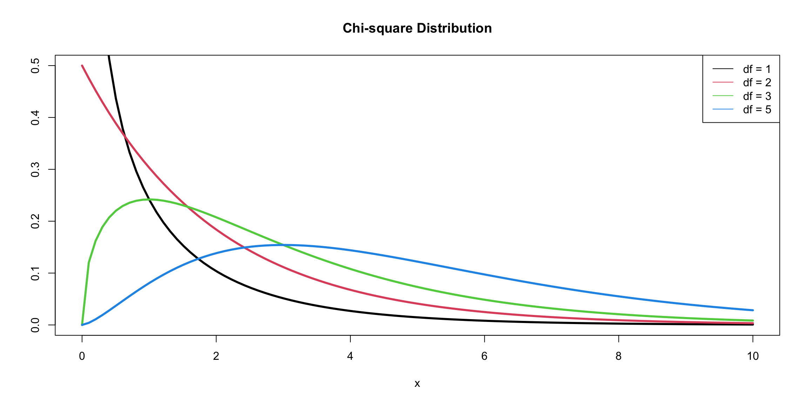
PSY 504: Advanced Statistics